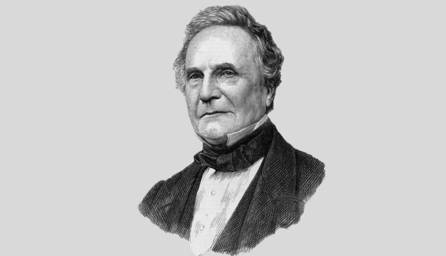

Charles Babbage's invention of the analytical engine and the notion of mechanical computers have had a significant impact on computer science. Even though he did not live to see his works completed, he introduced fundamental ideas such as branching and conditional statements that lay the groundwork for today's computers. Babbage and Ada Lovelace's partnership helped in the creation of the first algorithm and programming concepts. His influence may be seen in the computer science world, with names like "Babbage machine" and "Babbage's engine" still in use today. All things considered, Babbage's efforts have influenced and inspired the development of computing technology.
